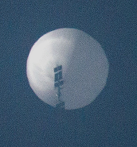
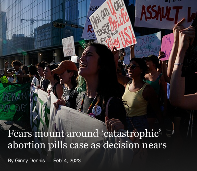

NEWSLETTER |
Democrats Overhaul Party's Primary Calendar, Upending a Political TraditionBy Ginny Dennis Just now Philomena Cunk Is Weird Enough to Take on the World |
Furor Over Chinese Spy Balloon Leads to a Diplomatic CrisisSecretary of State Antony J. Blinken on Friday canceled a weekend trip to Beijing after a Chinese spy balloon was sighted above the Rocky Mountain state of Montana, igniting a frenzy of media coverage and political commentary over a machine that the Pentagon said posed no threat to the United States.  More Airports to Use Greener 'Glide' Approach to LandingBy Ginny Dennis - Feb. 4, 2023 |
|  | |
London to Istanbul by train: This 10-day rail adventure is a slow traveller's dreamBy Ginny Dennis; Feb. 4, 2023
Romantic cross-European train journeys have long been associated with the Orient Express. But you no longer need to fork out thousands to make this fabled journey. |
More Airports to Use Greener 'Glide' Approach to LandingBy Ginny Dennis; Feb. 4, 2023
Eleven more U.S. airports plan to adopt a new way of landing planes that reduces both emissions and noise — all by having incoming planes turn off their engines and glide down to the tarmac like a paraglider. |